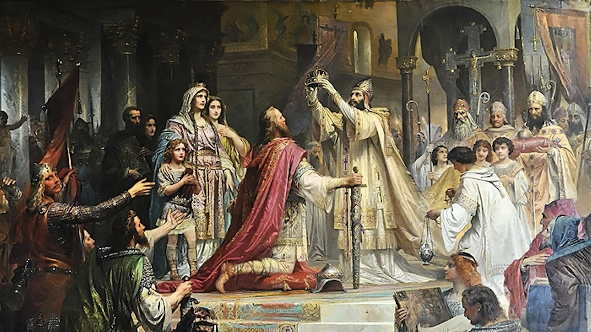
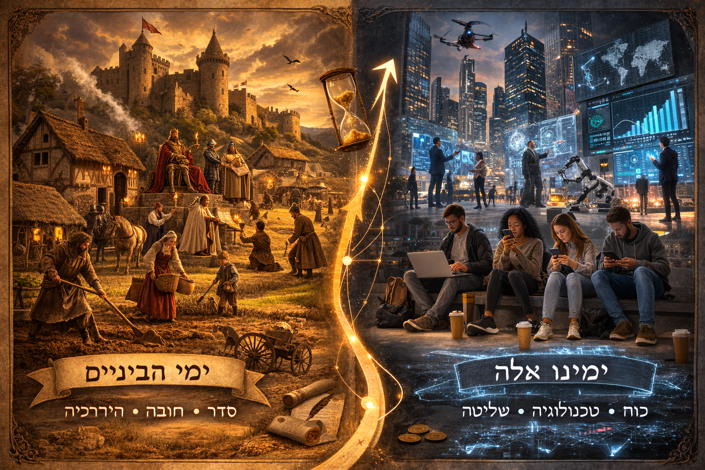
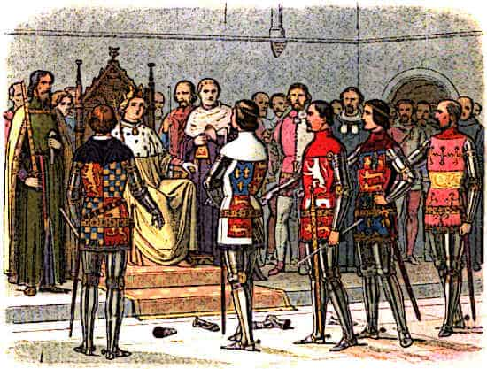
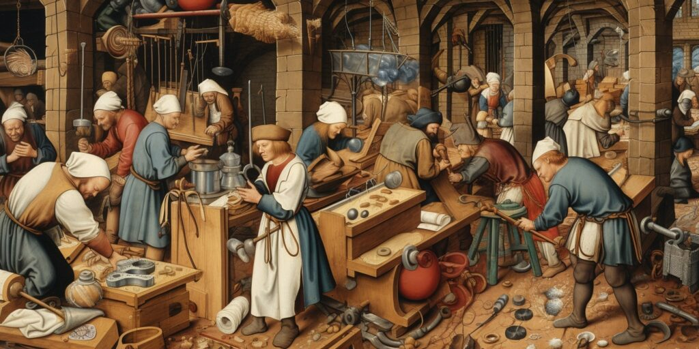
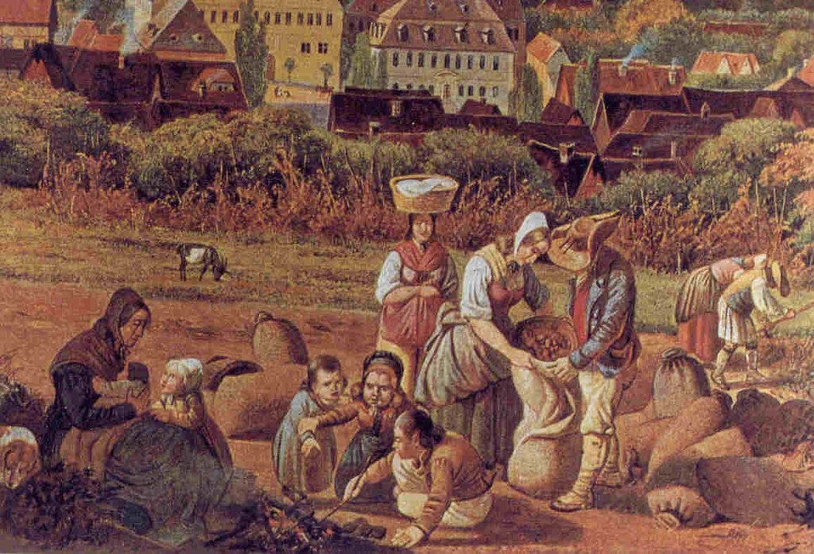
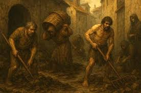
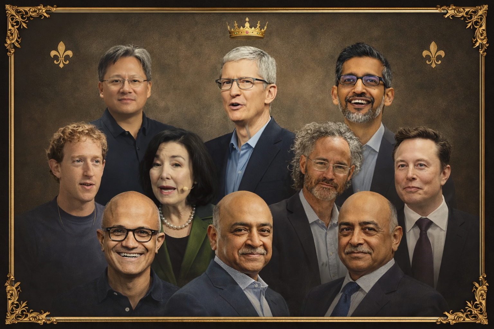
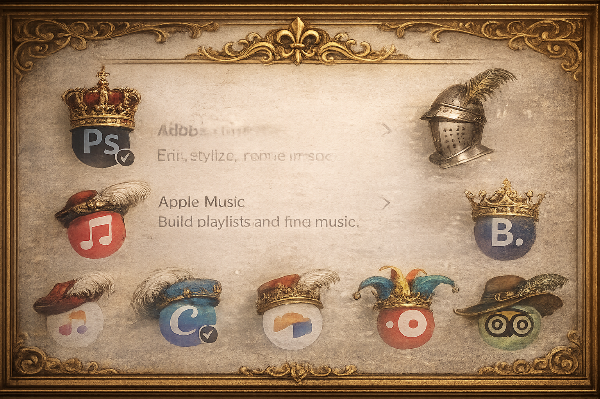

1. העליונים — הכתר, החרב והצלב
בראש הסדר עמדו המלך, האצולה הבכירה ואנשי הכמורה. הם החזיקו בקרקע, בלגיטימציה ובמערכת הכללים. הכוח היה גלוי, סמלי ומרוכז.
האם האנושות מתקדמת — או חוזרת לעידן הפיאודלי?

אם בעבר הקרקע הייתה מקור הכוח, היום התשתית הדיגיטלית תופסת את מקומה. החץ ההיסטורי עולה קדימה — אבל ייתכן שהמבנה החברתי שמתחתיו מוכר לנו הרבה יותר משנדמה.
העולם המודרני סיפר לעצמו סיפור של שחרור: יותר ידע, יותר ניידות, יותר עצמאות. אבל ייתכן שמתחת לשפה החדשה של חדשנות, פלטפורמות ובינה מלאכותית, נבנה מחדש סדר עתיק בהרבה — סדר שבו מעטים מחזיקים בתשתית, שכבות ביניים מפעילות אותה, ורבים תלויים בה מבלי להבין כיצד היא פועלת.
האם ההיררכיה המוכרת של מלכים, רוזנים, אומנים, איכרים ופשוטי עם חוזרת בצורה מודרנית בעקבות מהפכת הבינה המלאכותית?
חלק ראשון

בראש הסדר עמדו המלך, האצולה הבכירה ואנשי הכמורה. הם החזיקו בקרקע, בלגיטימציה ובמערכת הכללים. הכוח היה גלוי, סמלי ומרוכז.

הם לא היו המלכים, אך שלטו בשטח. היו להם סמכות, כוח צבאי ומעמד חברתי — כל עוד נשבעו נאמנות למי שמעליהם.

האומנים החזיקו בידע מעשי. הם ידעו לבנות, לתקן, לייצר ולהפעיל כלים מורכבים — אך לא החזיקו במבנה הכולל שבתוכו פעלו.

החקלאים נשאו את העולם הישן על גבם. הם סיפקו מזון, יציבות והמשכיות. בלי עבודתם, לא היה ארמון, לא כנסייה ולא צבא.

הרוב הגדול חי בתוך המערכת, אך לא שלט בה. הוא עבד, נשא, בנה ושרד — בעוד ההבנה, הסמכות והשליטה נותרו ברמות העליונות יותר.
חלק שני
המהפכה הדיגיטלית הוצגה במשך שנים כמהפכה של שוויון. האינטרנט, כך נאמר לנו, יפתח את הידע לכולם. הטכנולוגיה תאפשר לכל אדם ליצור, ללמוד ולהתבטא. ובמידה רבה — זה אכן קרה.
אבל במקביל, מתחת לפני השטח, הולך ומתגבש מבנה חדש של כוח ותלות. מבנה שבו השליטה אינה נובעת מקרקע או מצבאות, אלא משליטה בתשתיות חישוב, מודלים ונתונים.
כאשר מתבוננים בעולם הבינה המלאכותית המתפתח במהירות, ניתן לזהות בו שכבות ברורות.

קבוצה קטנה יחסית של חברות ומנהיגים מחזיקה במודלי ה־LLM הגדולים. מי שמחזיק במודלים הללו מחזיק למעשה בתשתית שעליה נבנות שכבות רבות של העולם הדיגיטלי החדש.

מעל התשתית הזו פועלות חברות שמפתחות כלים, שירותים ומוצרים. הן אינן מחזיקות תמיד בתשתית הבסיסית של המודלים, אך הן שולטות בכלים שבאמצעותם משתמש העולם הרחב ביכולות החדשות.
המערכת כולה אינה יכולה לפעול בלי האנשים שמבינים כיצד לבנות אותה ולהפעיל אותה. מהנדסי תוכנה, חוקרי AI ומדעני נתונים הם האדריכלים והמבצעים של העולם החדש.
מתחת לשכבת המפתחים נמצאת קבוצה הולכת וגדלה של אנשים שמסוגלים להשתמש בכלים החדשים בצורה יצירתית. הם אינם בונים את התשתית, אך הם יודעים להפעיל אותה כדי ליצור ערך.
רוב גדול עוד יותר של אנשים משתמש בטכנולוגיה החדשה — אך כמעט ואינו מבין כיצד היא פועלת. הם צורכים, מתקשרים ומשתמשים במכשירים חכמים, אך המנגנונים שמפעילים את העולם הדיגיטלי נותרים עבורם מסתוריים.
חלק שלישי
חלק רביעי
בניגוד לאיכרי ימי הביניים, רוב אזרחי המדינות המודרניות אינם צמיתים. הם נהנים מזמן פנוי, מניידות חברתית, ומכוח פוליטי במסגרת המשטר הדמוקרטי. החברה המודרנית יצרה עבור חלק גדול מן האוכלוסייה לא רק יותר נוחות, אלא גם יותר פנאי — זמן לחיים, לתרבות, ללמידה ולבחירה.
ההשוואה בין העולם הפיאודלי לבין מבנה הכוח של עידן הבינה המלאכותית איננה מושלמת. ההיסטוריה לעולם אינה חוזרת בדיוק על עצמה. ובכל זאת, הדמיון בין שתי המערכות מעורר מחשבה.
בימי הביניים מקור הכוח היה הקרקע. מי שהחזיק בקרקע שלט בכלכלה, בביטחון ובחוק. בעולם החדש, מקור הכוח איננו עוד האדמה אלא התשתית הדיגיטלית: מודלים, מחשוב, נתונים ושערי גישה. מי שמחזיק בתשתיות הללו מחזיק במידה רבה גם בכוח לעצב את הכללים של המערכת כולה.
אבל יש גם הבדל עמוק בין התקופות. בעולם הפיאודלי הניידות החברתית הייתה מוגבלת מאוד. האיכר נולד איכר ומת איכר. בעולם הדיגיטלי החדש, לפחות לעת עתה, עדיין קיימת אפשרות תנועה בין השכבות. אדם יכול ללמוד, להבין את הכלים החדשים, ולהפוך ממשתמש פסיבי למשתמש יוצר — ולעיתים אפילו למי שבונה את המערכות עצמן.
במובן זה, הדמוקרטיות הליברליות הן אולי ההבדל החשוב ביותר בין העולם החדש לבין העולם הפיאודלי. הן מאפשרות לציבור הרחב להישאר לא רק צרכן של הטכנולוגיה, אלא גם גורם שמפקח על הכוח שהיא מייצרת.
אם כך, השאלה האמיתית איננה האם תהיה היררכיה, אלא איזו היררכיה תיווצר: האם היא תהיה סגורה ומרוכזת בידי מעטים, או פתוחה מספיק כדי לאפשר תנועה, למידה ופיקוח אזרחי.
ייתכן שהעולם הדיגיטלי לא ביטל את הפיאודליזם — אלא רק החליף את הטירות בשרתים, ואת האדמה במודלים. אבל בניגוד לימי הביניים, עדיין עומדת בפני החברה האנושית האפשרות לבחור כיצד לאזן את הכוח הזה — ולשמור על דמוקרטיה ליברלית חיה, חופשית וערנית.